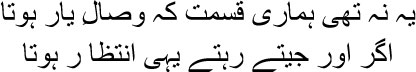

32

ere in dozakh today I admit to all of you, Mirza sahib, that I loved Ismat. It had never been necessary to tell her, for both of us knew. I had never contemplated married life with Ismat; marriage transforms the relationship between a man and a woman into a set of habits, and then the relationship begins to fade and finally turns utterly grey. I viewed Ismat like a picture gallery; as I wandered around this gallery, ever new images appeared, ever new scenes were born. Ismat was not particularly beautiful, but her features were both gentle and sharp at the same time. Behind her glasses, her eyes seemed perpetually eager for a surprise. When a dimple appeared in her cheek, it really was hard to tear your eyes away. And it was so amusing to watch her eating ice cream; if you gave her ice cream Ismat turned into a little girl.
My eyes apparently reminded her of a peacock’s tail. ‘Why does it feel that way, Ismat?’ I asked her one day.
— I don’t know. It seems that way.
— Writing stories has certainly taught you how to make things up.
— I don’t lie, Manto bhai.
— Why don’t you? There’s no colour to life without lying.
— You tell enough lies. I steal my colours from you.
— Wonderful!
— And one more thing, Manto bhai. When I look into your eyes my heart misses a beat.
— My goodness! I have to tell Shafia this. I’ve never heard of it happening to her.
— You love to hear good things about yourself, don’t you?
— Who doesn’t?
— You do more than anyone else. I haven’t seen another Narcissus like you.
Our relationship grew like a game. We’d argue about everything. Ismat wasn’t one to let anyone off the hook easily. My job was to annoy her. No one knows better than me, Mirza sahib, how primal the beauty of an angry Ismat was. Sometimes our quarrels would reach a point where it appeared we would never see each other again. One day in the course of such a quarrel I blurted out, ‘If you hadn’t been a woman I would have said something to shut you up good and proper.’
— Say whatever you please. There’s no need to spare me. Ismat answered grimly.
— Really? If you’d been a man …
— Come on, say it. What abuse would you heap on me? What would you have done?
— You’ll be embarrassed, Ismat.
— Not at all.
— Then you’re not a woman. I spoke agitatedly.
— Why? Why must I display embarrassment even if I’m not embarrassed, just because I’m a woman? So you too view men and women differently, Manto bhai? I had thought you different from the common man.
Ismat’s tongue turned into a dagger when she spoke this way.
‘Not at all,’ I stammered, ‘I don’t see men and women differently at all.’
— Then why don’t you say what you want to?
I was silent. Now Ismat began to bait me. ‘Say it Manto bhai, let me hear it. If you like I’ll run away shyly after that.’ She began to provoke me like a little girl. I laughed. ‘No, Ismat, my temper’s cooled down now.’
This was how I inevitably lost to Ismat every time. She had created her own world all by herself—without help from anyone. Her father Kasim Beg Chughtai was a magistrate; because he was transferred frequently, they had had to live in many different places. When Ismat was studying in class nine in Aligarh, her father was transferred to Sambar in Rajasthan. Ismat had wanted to stay in the school hostel and continue with her studies, but her parents weren’t willing. Ismat felt asphyxiated in Sambar. There was no opportunity whatsoever for studies there. One morning, her father was reading the newspaper after breakfast, while her mother sat on a stool slicing betelnuts. Entering the room, Ismat took a seat next to her mother. Then she said very calmly that she wanted to go to Aligarh to study. Ismat’s mother stared at her with wide eyes. Kasim Beg Chughtai discovered his daughter looking him in the eye. No child of his had ever done this before.
Ismat repeated, speaking directly, ‘I want to go to Aligarh to study.’
— But you’re already studying here with your grandfather.
— I want to take the matric examination.
— What for? Jugnu’s got two years to go in school. Then both of you will be married.
— I shall take the examination.
— There’s absolutely no need.
— Then I’ll run away.
— Run away? Run away where?
— Wherever I like.
Ismat’s mother was furious. But Kasim Beg Chughtai may have drawn his own conclusions from his daughter’s fearless response. He did send Ismat to Aligarh. This was the first victory in Ismat’s life. Unlike her sisters, she had not played with dolls as a child; she had competed head-on with boys. Ismat had never wanted to be married by the time she was twenty, as her sisters had been.
My six-year-long relationship with Ismat was like a watercolour. I no longer remembered when the painting was started or when it was completed. Moreover, with all the drinking, you can well understand, my brothers, my brain was in a bad way, I could not remember the sequence of events any more. I recall an interesting night, my brothers. Shahid and Ismat lived in Malad then. We invaded their house after midnight. Shafia and I, along with Nandaji and Khurshid Anwar. As soon as the door opened Shafia grabbed Ismat’s arm and began to tell her, ‘I told him hundreds of times not to disturb you. But your Manto bhai was determined to come.’
— You think you can stop me, Shafia? I’ll go where I please, when I please.
Shahid appeared and put his arm around my shoulder. ‘It’s going to be a terrific night, Manto, come …’
We were starving. But all the restaurants were closed. I said, ‘We’ll cook for ourselves tonight, Ismat. All I need is flour, dal and potatoes.’
Shafia refused to let us into the kitchen. How could men possibly cook for themselves? But we settled down in the kitchen with our bottle and glasses. I kneaded the dough, Nandaji set up the stove, and Khurshid peeled the potatoes. At one point Khurshid exclaimed, ‘I’m not capable of peeling these fucking potatoes. Can’t you eat them raw, Manto bhai?’ I made chapatis, though they were half burnt, and a mint chutney. After we had eaten, we went to sleep in that very kitchen. Ismat and Shahid had endured such unreasonable behaviour hundreds of times. The more I drank, the more I tried to convince Ismat, ‘I swear by Allah, Ismat, I’m not drunk. You want to see? Take a bet. I’ll give up drinking tomorrow. It’s simple enough for me.’
— Don’t bet, Manto bhai, you’ll lose. You’re drunk now.
It’s funny, very funny, Mirza sahib, how the label of drunkard was slapped on both of us. If you were indeed drunk all the time, when did you write all your ghazals? How could you have written all those letters? How did I manage to write all these stories, for that matter? Mine was a haphazard life, a vagabond’s existence, I was up to a hundred dirty tricks from dawn to dusk just to get two square meals a day. Without a drink or two I couldn’t focus or find the space to write. But after a drink, the words walked around the room, they took wing, they hummed, they writhed in pain. It was in those words that I discovered all the secret tears, chuckles, laughter and profanity of the working class, their shattered dreams and heartbroken sighs. Words contained a blue glow with the red flame of desire within it. I had never wanted to write about myself, Mirza sahib. Does any writer really write about his daily existence, his joys and sorrows, his likes and dislikes? Within his words he actually searches for the images of familiar and unfamiliar people which the words are forced to hide, whose memories can take those words down the path to perdition. A woman who toiled all day and slept peacefully at night could never be the heroine of my stories, my brothers. I was concerned only with the woman who stayed up all night with her lamp lit, waiting for customers, and then went to sleep in the daytime, waking up abruptly from a nightmare. What did she dream of? That her own aged self, with sagging skin, was knocking at her door.
Ismat always said that all the stories I wrote about brothels and whores were all made up. She didn’t believe any of the things I wrote about my friends either. Take Rafiq Ghaznavi. He was a good-for-nothing, a total scoundrel. He married four sisters from the same family, one after the other; there was no woman in any of Lahore’s brothels whom he didn’t sleep with. I really used to like Rafiq. Life was like a game for him. One day I told Ismat, ‘Come, let me introduce you to Rafiq bhai.’
— How will that help me? You keep saying he’s a scoundrel.
— That’s exactly why you should meet him. Who told you a scoundrel has to be a bad person? There are very few people as courteous as Rafiq.
— I don’t understand what you’re saying, Manto bhai. Perhaps I’m not intelligent enough.
— Stop putting up an act. Why not meet him? Rafiq bhai is very entertaining. There isn’t a girl who hasn’t fallen in love with him after seeing him, you know.
— I’m a girl too.
— But you’re my Ismat behen.
— Behen indeed. I don’t care for your tomfoolery, Manto bhai. Ismat dug her nails into my shoulder.
— I don’t address anyone else as behen this way, Ismat. Not even Iqbal.
— Why don’t you?
There was no answer to this, Mirza sahib. It was Ismat who had said one day, ‘Isn’t there a single thing in life that you’ve said openly?’ Ismat knew that even a devil like Manto needed a mask.
I did introduce Ismat to Rafiq bhai. Ismat admitted that he really was a courteous man. ‘How is this possible, Manto bhai?’ she asked me.
— I don’t know. I have never tried to understand Rafiq bhai. I have accepted him the way he is.
— Manto bhai …
— Your wish is my command.
— How do you dig out these pearls from the muck?
— Thank the lord.
— And the tales from the brothels? Are they true too? I don’t believe it. No one can match you when it comes to lying.
— Why should I lie? Anyone can visit a brothel if he has money in his pocket.
— The frauds who pretend to be your friends don’t have so much courage, Manto bhai. Sure, they might visit a brothel for the dance and music, but they dare not go any further.
— Oh but I’ve been too.
— For the dance and music? Ismat had smiled meaningfully.
— Why? Why should I go only for the dance and music? I went for exactly what people spend money on at a brothel.
— Shut up. So brazen! Ismat had screamed. There’s a limit to lies.
— Why, what’s the problem?
— Impossible. You have deliberately created this image of yourself.
— I swear on the lord, Ismat, I’ve been to brothels.
— Don’t you bring the lord into this. Do you even believe in the lord?
— I swear on my dead son.
— Manto bhai! She clutched my hair with both her hands. Are you a human being? How can you swear on your son?
I saw Ismat’s eyes were brimming over. I began to laugh.
— Why can’t you believe that I’m an expert at wooing girls, Ismat behen?
— This is our last meeting, Manto bhai, I’m warning you. Ismat was seething. Dimples had appeared on both her cheeks. I wanted to stoke her anger further. ‘Wait, let me call Shafia,’ I said. ‘Listen to what she has to say.’
Ismat exploded as soon as Shafia appeared. ‘Has Manto bhai told you that he’s visited the women at the brothels?’
— He’s told me many times.
— Impossible. Ismat fumed in rage as she paced up and down. Very well, maybe he’s been to them, and if he has, all he’s done is to have a conversation or two with them. Right, Shafia?
— No idea. Only Manto sahib can say.
I burst out in laughter. And Ismat screamed all the louder, ‘It isn’t possible, it simply isn’t possible. Even if Manto bhai swears on the Quran I won’t believe it.’
Such childlike trust. It’s hard to imagine the same Ismat writing a story like ‘Dozakhi’ about her dead brother Azim Beg. The story said that every incident ever recounted by Azim Beg was a lie. Whenever he began a story, their father would apparently say, ‘There you go building castles in the air again.’ ‘Whatever colour there is in life comes from lies, Abbajaan,’ Azim Beg would reply. ‘The truth doesn’t sound entertaining unless lies are added to it.’ The same mad streak ran through Ismat as well. She used to have strange whims. One day she said she would write a story about love between hens and cocks. Another time she declared she would give up writing and join the armed forces to fly aeroplanes. She was the kind of girl, Mirza sahib, who might be head over heels in love with you, but would still attack you mercilessly or just not talk to you. Maybe she was dying to kiss you, but instead she would prick you with a needle and make fun of you. Shafia had fallen in love with Ismat too. When she said as much one day, Ismat told her, ‘High hopes! Men with daughters of your age are in love with me, and you think you can …’ One particular writer was madly in love with Ismat, writing her a succession of letters. Ismat would write back too. Finally, she jilted him so ruthlessly, my brothers, that the writer didn’t know where to hide. That was the way Ismat was, like a floating cloud. When she didn’t write, months would pass but she couldn’t be forced to put pen to paper. And when she did write, she would write page after page, forgetting to eat or sleep or drink. All she needed was a supply of ice cream.
Tell me, Mirza sahib, I’ve told you so much about Ismat—can you recognize her? Think of gulal of different colours—green, red, yellow, pink—in the courtyard when a breeze springs up. The colours mix with one another till they cannot be told apart anymore. Wasn’t she just like that? I remember a portion of
‘Dozakhi’. Early one morning, Shamim came to Ismat to wake her. ‘Get dressed, Azim bhai is dying.’ Ismat replied, ‘Azim bhai will never die. Why did you wake me up unnecessarily?’
Shamim began to prod her. ‘Wake up, Ismat. Azim bhai is looking for you.’
— Tell him I will see him on Judgement Day. Haven’t I told you Azim bhai cannot die?
Ismat had written, wherever Munna bhai might be, in heaven or in hell, in jannat or jahannum, I want to see him. I know that he’s still smiling. Worms are gnawing at his flesh, his bones have turned to dust, and his neck has been snapped by the fatwa of the mullahs. But still he’s smiling. His mischievous eyes are dancing. His poisoned lips have turned blue, but still no one shall see a tear in his eye. In fact, he has only been transferred from one dozakh to another.
After Azim Beg, Ismat had discovered in me another inhabitant of hell. We may have meant to meet for five minutes, but five hours would pass without our knowing it. Arguments, and more arguments. She was determined to defeat me. Did she want to take revenge through me on the Munna bhai she had lost? I used to get coughing fits when drinking. I had had a cough problem since childhood, after all. Ismat couldn’t stand my coughing. One day she asked, ‘You have such a bad cough, why don’t you get it treated, Manto bhai?’
— Treatment! Doctors are asses. A few years ago they had predicted I would die of tuberculosis within the year. You can see how hale and hearty I am. Magicians are better than doctors.
— I heard someone else say the same thing.
— Who’s this angel?
— My elder brother Azim Beg. He’s snoring in his grave now.
Yes, Mirza sahib, on the one hand I was her Manto bhai, sometimes Manto sahib, and on the other I was also her Munna bhai—Azim Beg Chughtai. She had made me the target of the game she couldn’t play with her brother. And her husband Shahid used to enjoy this game enormously; he knew that Ismat would calm down only if she could tear Manto apart, that all of Ismat’s ‘darazdasti’ capers would be accepted by a clown named Manto.
It was over this term ‘darazdasti’ that Ismat and I had a bitter argument once. Shahid and Ismat had invited us to dinner at their house in Malad. Over the meal, Shahid said, ‘Why is your Urdu not flawless yet, Manto?’
— Don’t talk rot.
Accusations and counter accusations flew fast and furious. It was past one-thirty in the morning. Tired, Shahid said, ‘Let it go now, I’m sleepy.’
Ismat refused to relent. She kept arguing. In some context or the other, she used the word ‘dastdarazi’. I saw my chance. ‘You’ve been holding forth so grandly all this time. But there’s no such word as “dastdarazi”, Ismat. It should be “darazdasti”.’
— Of course not.
— Check the dictionary.
— No need to. I’m telling you it’s ‘dastdarazi’.
— Don’t argue without reason.
— Who do you think you are, Manto bhai, the king emperor of Urdu literature?
Eventually Shahid fetched the dictionary from the next room. There really was no such word as ‘dastdarazi’; it was indeed ‘darazdasti’. ‘You’ve lost, Ismat,’ said Shahid, ‘you must accept it.’
But Ismat refused to do any such thing. Now husband and wife began to argue. I sat back chuckling. It was dawn by then, the cocks had begun to crow. Flinging the dictionary away, Ismat declared, ‘When I compile a dictionary, I will have the word “dastdarazi”. “Darazdasti” my foot!’
Ismat was a crazy woman—really crazy. Let’s say someone were to ask us, the two of you are so close—what is it about Ismat that you like so much, Manto? And what about Manto attracts you, Ismat? I know both of us would have been in the dark. In that darkness Ismat and I would have looked at each other in wonder. A single lifetime isn’t enough for anyone, Mirza sahib.